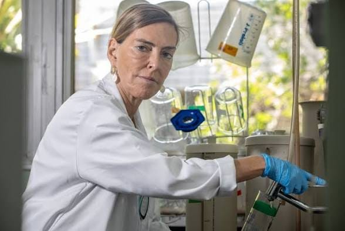

Uma pesquisa brasileira utiliza uma rede de proteínas para tentar restaurar a comunicação entre cérebro e corpo após lesões medulares graves — e já apresenta resultados preliminares promissores.
A polilaminina é uma molécula formada por uma rede de proteínas capaz de ajudar a restaurar a comunicação entre o cérebro e o corpo após lesões graves na medula espinhal. O projeto é liderado pela bióloga e professora Tatiana Sampaio Coelho, que se destacou ao apresentar resultados preliminares promissores em estudos com animais e em um pequeno grupo de humanos.
Tatiana Sampaio Coelho em seu laboratório de pesquisa
A molécula deve ser aplicada cirurgicamente em até 72 horas após o trauma que causou a paraplegia ou tetraplegia, impedindo que a cicatrização bloqueie a comunicação neural entre as regiões lesionadas.
Mesmo sem autorização para comercialização, e ainda em uma fase inicial de pesquisas, a polilaminina tem levado pessoas com diferentes tipos de lesão medular a entrar na Justiça para obter acesso ao tratamento por meio de liminares.
Fonte: BBC News Brasil